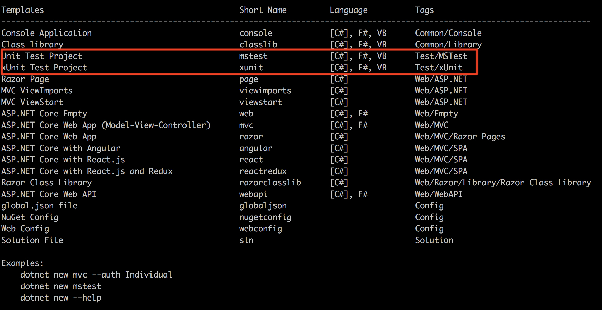
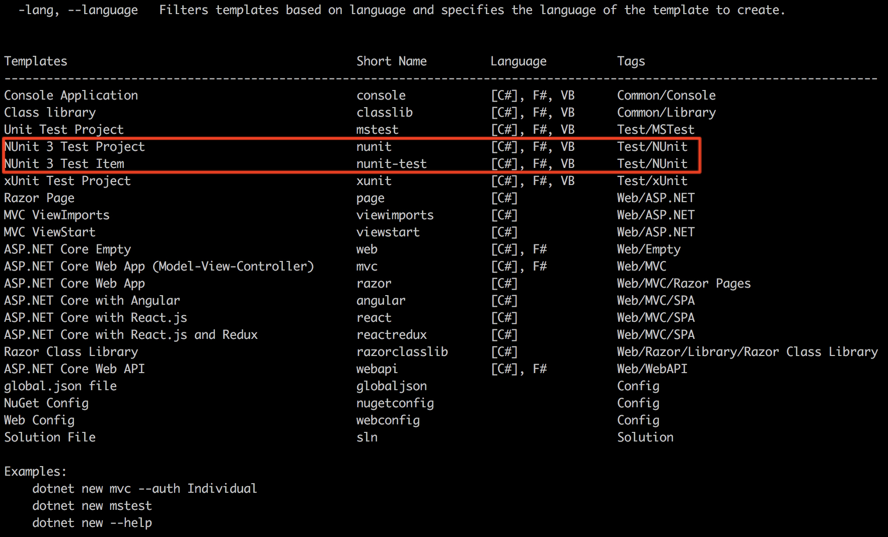
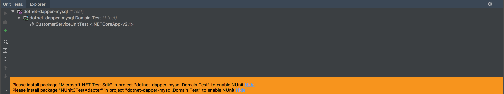
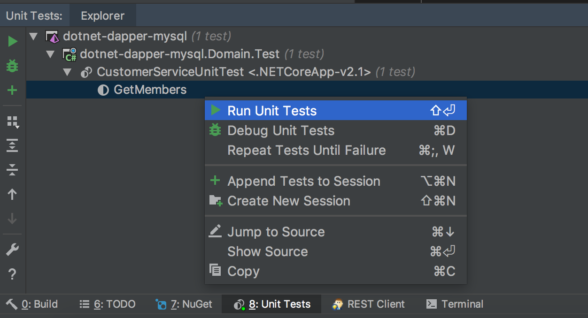
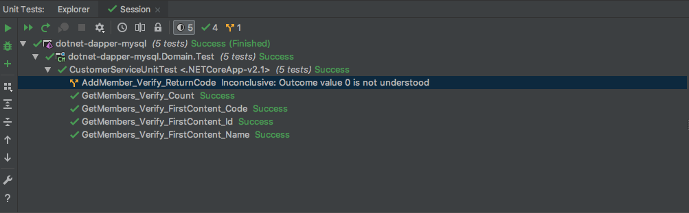
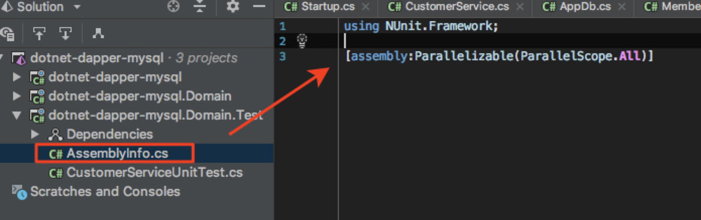

介紹如何將 NUnit Test 正確的於 .NET Corek的環境與 Rider 中運行
當我們安裝完 .NET Core SDK 從預設的 IDE 我們只能看到當前的專案版型預設僅支援 MSTest 與 xUnit

這邊就來複習一下如何加入 NUnit 作為測試框架. 另外，最近開始重新接觸 .NET Core ，所以順手嘗試了一下 Rider 這個專門為 C# 開發所做的IDE．
What is NUnit
NUnit 是一個從 JUnit 移植過來的專案計畫，主要是提供跟全面的測試與驗證．目前 NUnit 也被納入 .NET Foundation 計劃當中長期經營了．
如果簡單要建立一個空白的測試專案並讓其可以運作可以手動加入以下 package(Microsoft.NET.Test.Sdk,NUnit,NUnit3TestAdapter):
dotnet pack
這邊可以先透過擴充 dotnet core 當前的樣板，將 NUnit 的專案樣板加入命令列中：
dotnet new -i NUnit3.DotNetNew.Template
這邊我們再次輸入
dotnet new -h
即可看到：

而之後我們就可以建立該測試專案了．
What is Rider
Rider 是一款由 Jetbrain 所推出的.NET IDE ，由於很多功能基于 IntelliJ 和 ReSharper 開發，所以有機會取代 Visual Studio 成為 C# 開發人士的最愛並且目前能有效地開發跨平的 .NET Core 的應用程式，很值得來嚐試一下！
當我們透過上面的流程成功加入專案樣板後，新增專案的區塊則會多出一塊 Other 裡面就可以新增 NUnit Test 的測試專案．
而當我們從 NUnit Test 運行測試專案時，則會提示需要安裝額外的套件：

當我們成功透過 nuget 安裝好後即可從 UI 直接操作測試：

這邊如果有設定無結果或未知的測試驗證則會出現黃色的分岔服務與對應的意外錯誤：

Test.cs
1 | using System; |
另外有人介紹 NUnit 預設並不是以 平行(parallel) 進行單元測試，而是以 依序(sequential) 方式，主要是讓可以讓一個單元測試執行完，才會進行下一個單元測試．好處是可以安全的將有相依的測試依序執行，但由於不是每個單元測試平行執行，所以有以下缺點：
- 執行速度較慢，沒有完全發揮多核心 CPU 的優勢
- 如果有使用 Jenkins ，大多會以 parallel 方式執行單元測試
- 單元測試之間彼此有相依性也是一種壞味道，建議應該各別獨立運行．這可以參考測試案例壞味道（8）：Erratic Test的說明
基於以上幾點我們可以透過建立專案內的 AssemblyInfo.cs 來設定：

當然也可以根據每個測試案例設定並行測試原則，可參考Parallelizable Attribute
一定要選 NUnit 嗎？
其實 NUnit 在 .NET Framework 算是一個穩定的測試框架，相較於 MSTest 功能上比較受限且該測試框架只能跑微軟的語言，選擇 NUnit 是一個對於未來交為彈性的準備．而作為後起的 xUnit 則是加入更多新功能也被微軟作為未來除了官方 ＭSTest 為首推的開源框架．
而 xUnit 其實也是 NUnit 同一群人開發的，這邊也找了他們解釋為什麼要進行額外的 xUnit 開發：Why Did we Build xUnit 1.0?
功能比較的部分可以參考Comparing xUnit.net to other frameworks，技術選擇青菜蘿蔔各有所愛，所以這邊也不說明選什麼比較好了，反正就是保持更換的彈性就對了！
這邊就有人整理了自己實務上的經驗推薦 xUnit(NET Core 2: Why xUnit and not NUnit or MSTest)，不過這邊他比較的不是 MSTest 2．